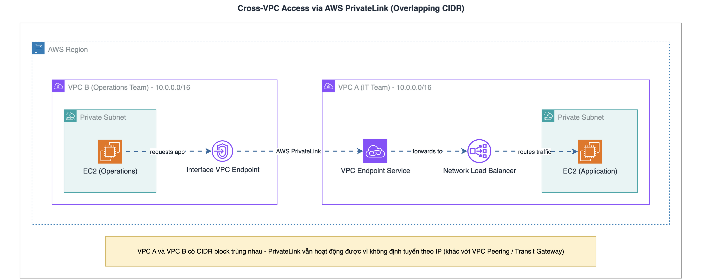
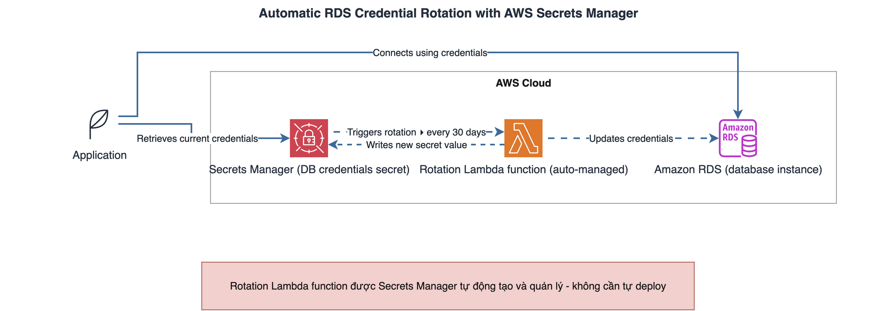
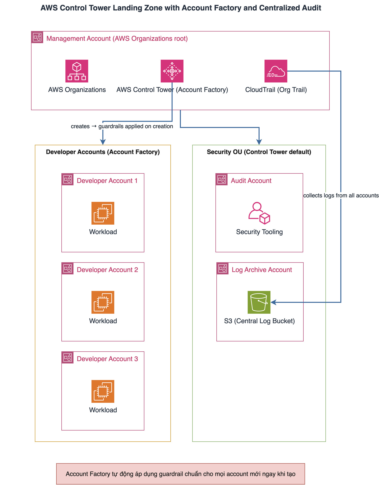
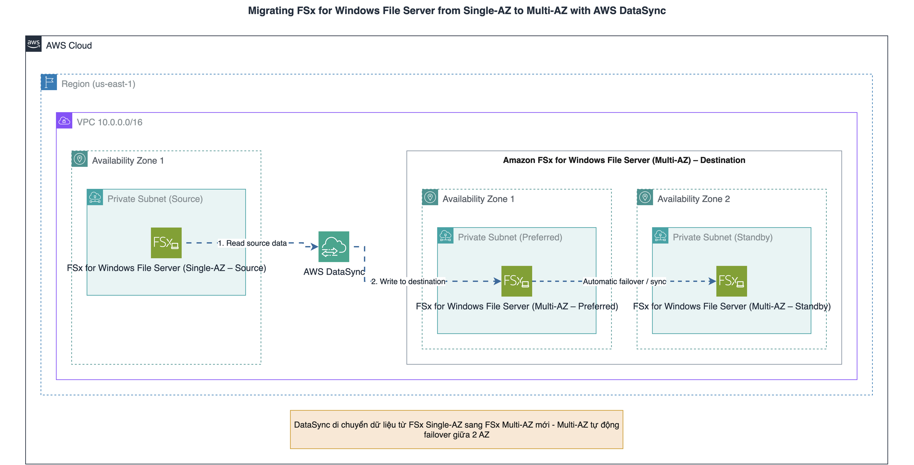

AWS SAA-C03 - CloudExam.Pro - Test 01
Tổng: 65 câu. Mỗi câu ghi: đề, đáp án đã chọn, đáp án đúng, giải thích, tips (phần giải thích nằm trong toggle).
Question 1/65
A company is moving data from an on-premises data center to the AWS Cloud. The company must store all its data in an Amazon S3 bucket. To comply with regulations, the company must also ensure that the data will be protected against overwriting indefinitely.
Which solution will ensure that the data in the S3 bucket cannot be overwritten?
- A. Enable versioning for the S3 bucket. Use server-side encryption with Amazon S3 managed keys (SSE-S3) to protect the data.
- B. Configure S3 Storage Lens for the S3 bucket. Use server-side encryption with customer-provided keys (SSE-C) to protect the data.
- C. Disable versioning for the S3 bucket. Configure S3 Object Lock for the S3 bucket with a retention period of 1 year.
- D. Enable versioning for the S3 bucket. Configure S3 Object Lock for the S3 bucket with a legal hold.
Đáp án & Giải thích
Đã chọn: A ❌
Đáp án đúng: D ✅📝 Tóm tắt đề
- Di chuyển data từ on-premises lên S3
- Yêu cầu dữ liệu trong bucket không bị overwrite (protected against overwriting) indefinitely (vô thời hạn)
- → Yêu cầu: chọn giải pháp bảo vệ object khỏi bị ghi đè vĩnh viễn
✅ Đáp án đúng
D. Enable versioning for the S3 bucket. Configure S3 Object Lock for the S3 bucket with a legal hold.
- Object Lock bắt buộc phải bật versioning trước mới cấu hình được → khớp bước 1 của đáp án
- Legal hold không có thời hạn cố định (no expiration date), chỉ mất hiệu lực khi người có quyền
s3:PutObjectLegalHoldchủ động gỡ → đúng nghĩa “indefinitely”- Retention period (kể cả Compliance mode) vẫn có ngày hết hạn xác định, không phải “indefinitely” thuần túy như legal hold
❌ Các đáp án sai
- A. Enable versioning + SSE-S3
- SSE-S3 chỉ mã hoá dữ liệu, không ngăn việc ghi đè/xoá object - đây là 2 khái niệm khác nhau (encryption vs immutability)
- C. Disable versioning + Object Lock retention 1 year
- Object Lock yêu cầu bucket phải bật versioning, không thể cấu hình khi versioning bị disable → phương án này không khả thi kỹ thuật
- Retention period 1 năm cũng chỉ có hạn, không phải “indefinitely”
- B. S3 Storage Lens + SSE-C
- Storage Lens là công cụ phân tích/báo cáo usage, không liên quan bảo vệ object khỏi ghi đè
- SSE-C cũng chỉ là mã hoá, không phải kiểm soát ghi đè
🔑 Tips and tricks
- “cannot be overwritten indefinitely” / “vô thời hạn” → S3 Object Lock Legal Hold (không phải retention period có hạn)
- “Object Lock” luôn đi kèm điều kiện: bucket phải bật Versioning trước - nếu đề nói “disable versioning” + Object Lock → loại ngay
- Nếu đề chỉ nói “mã hoá dữ liệu” (SSE-S3/SSE-C) → không liên quan yêu cầu chống ghi đè/xoá, loại ngay
📖 Reference
Question 2/65
An IT team runs an application on Amazon EC2 instances in VPC A. An operations team uses EC2 instances in VPC B. The operations team needs the ability to make secure calls to the IT team’s application from VPC B. Both VPCs have overlapping IPv4 CIDR blocks.
Which solution will meet these requirements?
- A. Create an IPsec tunnel between the two VPCs. Update the route tables for both VPCs by using the virtual gateway ID.
- B. Create a transit gateway. Attach both VPCs to the transit gateway. Configure routing appropriately.
- C. Create a VPC peering connection between the two VPCs. Update the route tables for both VPCs by using the peering connection ID.
- D. Use AWS PrivateLink. Create an endpoint service in VPC A and a VPC endpoint in VPC B.
Đáp án & Giải thích
Đã chọn: C ❌
Đáp án đúng: D ✅📝 Tóm tắt đề
- IT team chạy app trên EC2 trong VPC A; Operations team dùng EC2 trong VPC B
- Operations team cần thực hiện secure calls đến app của IT team từ VPC B
- Hai VPC có CIDR block trùng nhau (overlapping)
- → Yêu cầu: kết nối 2 VPC an toàn dù CIDR trùng nhau
✅ Đáp án đúng
D. Use AWS PrivateLink. Create an endpoint service in VPC A and a VPC endpoint in VPC B.
- PrivateLink hoạt động qua Interface VPC Endpoint (ENI), không định tuyến theo IP CIDR giữa 2 VPC → không bị ảnh hưởng bởi CIDR trùng nhau
- Traffic đi hoàn toàn trong AWS network, không qua internet → đáp ứng “secure calls”
- Đây là giải pháp chuẩn của AWS cho case “connecting networks with overlapping IP ranges”

❌ Các đáp án sai
- C. VPC peering + update route tables bằng peering connection ID
- VPC Peering không hỗ trợ khi 2 VPC có CIDR block trùng nhau - giới hạn kỹ thuật, route table không thể phân biệt đích đến
- B. Transit gateway + attach cả 2 VPC
- Transit Gateway định tuyến dựa trên IP, cũng không hoạt động được khi CIDR 2 VPC trùng nhau
- A. IPsec tunnel + update route tables bằng virtual gateway ID
- Vẫn phụ thuộc route table theo IP - cùng vấn đề CIDR trùng nhau như 2 đáp án trên
- IPsec qua virtual private gateway thường dùng cho kết nối on-premises, không phải kết nối VPC-to-VPC nội bộ AWS
🔑 Tips and tricks
- “overlapping CIDR blocks” + kết nối 2 VPC → loại ngay VPC Peering, Transit Gateway, mọi giải pháp dựa trên route table theo IP
- “overlapping CIDR” + cần secure connectivity → luôn nghĩ đến AWS PrivateLink (Interface Endpoint không quan tâm CIDR)
📖 Reference
Question 3/65
A solutions architect needs to configure automatic rotation for Amazon RDS database credentials. The credentials must rotate every 30 days. The solution must integrate with Amazon RDS.
Which solution will meet these requirements with the LEAST operational overhead?
- A. Store the credentials in AWS Secrets Manager. Configure automatic rotation with a rotation interval of 30 days.
- B. Store the credentials in AWS Systems Manager Parameter Store as a secure string. Configure automatic rotation with a rotation interval of 30 days.
- C. Store the credentials in a file in an Amazon S3 bucket. Deploy an AWS Lambda function to automatically rotate the credentials every 30 days.
- D. Store the credentials in AWS Secrets Manager. Deploy an AWS Lambda function to automatically rotate the credentials every 30 days.
Đáp án & Giải thích
Đã chọn: A ✅
Đáp án đúng: A ✅📝 Tóm tắt đề
- Cần automatic rotation cho RDS database credentials
- Rotate mỗi 30 ngày
- Solution phải integrate với Amazon RDS
- → Yêu cầu: chọn giải pháp có LEAST operational overhead
✅ Đáp án đúng
A. Store the credentials in AWS Secrets Manager. Configure automatic rotation with a rotation interval of 30 days.
- Secrets Manager có built-in integration sẵn với RDS (MySQL, PostgreSQL, Aurora…) - chỉ cần bật “Enable automatic rotation” và chọn interval, Secrets Manager tự tạo Lambda rotation function cho mình
- Không cần tự viết/deploy Lambda → đúng nghĩa “least operational overhead”

❌ Các đáp án sai
- B. Parameter Store (secure string) + automatic rotation 30 days
- Parameter Store không có tính năng automatic rotation tích hợp sẵn cho RDS như Secrets Manager - phải tự xây dựng cơ chế rotation, tăng operational overhead
- C. File trong S3 bucket + tự deploy Lambda rotate
- S3 không phải dịch vụ quản lý secret chuyên dụng, phải tự viết toàn bộ logic rotation bằng Lambda → overhead cao nhất trong 4 lựa chọn
- D. Secrets Manager + tự deploy Lambda rotate
- Dùng đúng Secrets Manager nhưng lại tự deploy Lambda riêng thay vì dùng rotation function có sẵn - thừa công sức, vi phạm yêu cầu “least operational overhead”
- Đáp án này chỉ đúng khi cần rotation logic tùy chỉnh cho database/API mà Secrets Manager không hỗ trợ rotation sẵn
🔑 Tips and tricks
- “LEAST operational overhead” + rotate credentials cho RDS/Aurora → Secrets Manager với automatic rotation built-in, không tự deploy Lambda
- Nếu đề nói rotate cho database/service không được Secrets Manager hỗ trợ sẵn → khi đó mới cần tự deploy Lambda rotation function
- Parameter Store phù hợp cho config thường, không phải lựa chọn chuẩn cho rotation credentials tự động
📖 Reference
Question 4/65
A company uses an existing AWS account that is dedicated to management. The company needs to create separate accounts for multiple developer teams. Then, the developer accounts can host resources outside of the management account.
A security team requires a centralized capability to audit user activity and to identify the resources that the teams create. Additionally, the company must apply a standard set of controls to any new accounts upon creation.
Which solution will meet these requirements?
- A. Enable AWS Organizations. Create a new security account. Configure AWS Config as an aggregator. Create new developer accounts as aggregator sources.
- B. Create an Amazon S3 bucket in the management account. Create new developer accounts by using Organizations. Configure AWS Cloudtrail in each new account. Use the S3 bucket in the management acocunt as the target.
- C. Enable AWS Organizations. Configure an AWS Control Tower landing zone. Set up an AWS CloudTrail organizational trail in management account. Create new developer accounts by using Account Factory.
- D. Enable AWS Organizations. Set up an AWS CloudTrail organizational trail in the management account. Create new developer accounts by using AWS Organizations.
Đáp án & Giải thích
Đã chọn: D ❌
Đáp án đúng: C ✅📝 Tóm tắt đề
- Có sẵn management account; cần tạo nhiều developer accounts riêng cho từng team
- Developer accounts host resource ngoài management account
- Security team cần centralized capability để audit user activity + xác định resource các team tạo ra
- Công ty phải áp dụng standard set of controls cho account mới ngay khi tạo (upon creation)
- → Yêu cầu: multi-account governance + centralized audit + tự động áp dụng control chuẩn cho account mới
✅ Đáp án đúng
C. Enable AWS Organizations. Configure an AWS Control Tower landing zone. Set up an AWS CloudTrail organizational trail in management account. Create new developer accounts by using Account Factory.
- Control Tower landing zone tự động áp dụng guardrails (standard controls) cho mọi account mới tạo qua Account Factory → đúng “apply standard set of controls… upon creation”
- Organizational trail trong management account tự động ghi log CloudTrail cho tất cả account thành viên → đáp ứng centralized audit
- Control Tower cũng tự động bật AWS Config để theo dõi resource các team tạo ra

❌ Các đáp án sai
- A. Organizations + security account + AWS Config aggregator
- AWS Config aggregator chỉ tổng hợp compliance/resource inventory, không tạo CloudTrail audit tập trung, và không tự áp dụng standard controls khi tạo account mới
- B. S3 bucket ở management account + CloudTrail cấu hình trong từng account
- Phải tự cấu hình CloudTrail thủ công cho từng account thay vì tự động, tốn operational overhead, và vẫn không có cơ chế áp standard controls tự động cho account mới
- D. Organizations + CloudTrail organizational trail + tạo account bằng Organizations
- Có centralized audit (org trail) nhưng thiếu Control Tower/Account Factory → không có cơ chế tự động áp standard set of controls cho account mới khi tạo, chỉ tạo account “trần” qua Organizations
🔑 Tips and tricks
- “standard set of controls… upon creation” (account mới) → luôn nghĩ đến AWS Control Tower + Account Factory (guardrails tự động), không phải Organizations đơn thuần
- “centralized audit toàn bộ member account” → CloudTrail organizational trail đặt tại management account
- Nếu đề chỉ nói tạo account bằng Organizations mà không nhắc “chuẩn hoá control tự động” → Organizations đơn thuần đủ dùng; nếu có “standard controls upon creation” → phải là Control Tower
📖 Reference
Question 5/65
A company is migrating an on-premises data center to the AWS Cloud. The company is using Amazon FSx for Windows File Server to perform test deployments into a single Availability Zone. After testing, the company determines that it needs to improve availability and fault tolerance for its shared Windows file system.
Which solution will meet these requirements?
- A. Shut down the existing FSx for Windows File Server file system. Change the deployment configuration to a Multi-AZ deployment type. Restart the file system.
- B. Set up a new FSx for Windows File Server file system that has a Multi-AZ deployment type. Use AWS DataSync to transfer data from the original file system to the new file system.
- C. Set up a new FSx for Windows File Server file system in a second Availability Zone. Use AWS Transfer Family to replicate data from the original file system. Use the new file system as a failover option.
- D. Set up a new FSx for Windows File Server file system that has a Multi-AZ deployment type. Use AWS DMS to transfer data from the original file system to the new file system.
Đáp án & Giải thích
Đã chọn: C ❌
Đáp án đúng: B ✅📝 Tóm tắt đề
- Company dùng FSx for Windows File Server, deploy test ở 1 Availability Zone (Single-AZ)
- Sau test, cần cải thiện availability và fault tolerance cho shared Windows file system
- → Yêu cầu: nâng cấp từ Single-AZ sang kiến trúc chịu lỗi cao hơn
✅ Đáp án đúng
B. Set up a new FSx for Windows File Server file system that has a Multi-AZ deployment type. Use AWS DataSync to transfer data from the original file system to the new file system.
- Multi-AZ deployment type là tính năng native của FSx for Windows để tự động failover giữa các AZ → đúng “improve availability and fault tolerance”
- AWS DataSync là công cụ AWS khuyến nghị chính thức để migrate dữ liệu giữa 2 file system FSx, kể cả từ Single-AZ sang Multi-AZ

❌ Các đáp án sai
- C. FSx mới ở AZ thứ hai + AWS Transfer Family replicate + failover
- Đây là 2 file system Single-AZ riêng biệt với failover thủ công, không phải kiến trúc Multi-AZ native của FSx - không tự động failover, tốn thêm công sức vận hành
- AWS Transfer Family dùng cho SFTP/FTPS transfer, không phải công cụ chuẩn để đồng bộ dữ liệu giữa 2 FSx file system
- A. Shut down FSx hiện tại → đổi sang Multi-AZ → restart
- Không thể đổi trực tiếp deployment type của 1 file system đang chạy từ Single-AZ sang Multi-AZ bằng cách tắt/bật lại - đây không phải thao tác được AWS hỗ trợ, phải tạo file system Multi-AZ mới
- D. FSx Multi-AZ mới + AWS DMS transfer data
- AWS DMS dùng để migrate database, không phải công cụ để transfer dữ liệu file system - sai loại service
🔑 Tips and tricks
- “cải thiện availability/fault tolerance” cho FSx → Multi-AZ deployment type, không phải tạo thêm file system Single-AZ thủ công
- “chuyển đổi deployment type Single-AZ → Multi-AZ” → luôn phải tạo file system mới, không thể đổi tại chỗ bằng restart
- “Migrate dữ liệu giữa 2 FSx file system” → AWS DataSync (không phải DMS - chỉ dành cho database, không phải Transfer Family - dành cho SFTP)
📖 Reference
Question 6/65
A company receives data from several sources and stores the data in an Amazon S3 data lake. The company transforms the data and ingests it into multiple downstream data stores, including databases and data warehouses.
A solutions architect wants to design an extract, transform, and load (ETL) pipeline to orchestrate a process to prepare and load the data for analytics activities. The processed data must also be available for stakeholders through dashboards and visualizations.
Which solution will meet these requirements with the LEAST development effort?
- A. Use Amazon EMR and a custom Scala script to create ETL pipelines. Use an AWS Lambda function to orchestrate the workflow. Use Amazon OpenSearch Service to generate dashboards and visualizations.
- B. Use AWS Glue to create ETL pipelines. Use AWS Step Functions to orchestrate the workflow. Use Amazon QuickSight to generate dashboards and visualizations.
- C. Use an AWS Lambda function to create ETL pipelines. Use AWS Step Functions to orchestrate the workflow. Use Amazon QuickSight to generate dashboards and visualizations.
- D. Use custom scripts that run on Amazon EC2 instances to create ETL pipelines. Use AWS Glue to orchestrate the workflow. Use AWS Glue DataBrew to generate dashboards and visualizations.
Đáp án & Giải thích
Đã chọn: B ✅
Đáp án đúng: B ✅📝 Tóm tắt đề
- Dữ liệu nằm trong S3 data lake, cần chuyển vào nhiều downstream data stores (database, data warehouse)
- Cần thiết kế ETL pipeline có orchestration (điều phối quy trình)
- Dữ liệu sau xử lý phải hiển thị được qua dashboards and visualizations cho stakeholders
- → Yêu cầu: xây dựng ETL pipeline + orchestration + dashboard với LEAST development effort
✅ Đáp án đúng
B. Use AWS Glue to create ETL pipelines. Use AWS Step Functions to orchestrate the workflow. Use Amazon QuickSight to generate dashboards and visualizations.
- AWS Glue là dịch vụ ETL serverless, được quản lý hoàn toàn (fully managed), hỗ trợ tạo job ETL bằng giao diện kéo-thả (Glue Studio) hoặc script tự sinh, không cần code Scala/Spark thủ công
- Step Functions là dịch vụ orchestration serverless, tích hợp sẵn với Glue để điều phối workflow bằng cấu hình (low-code) thay vì viết Lambda function riêng để orchestrate
- QuickSight là dịch vụ BI serverless của AWS, kết nối trực tiếp tới S3/Redshift/RDS để tạo dashboard mà không cần code
- Cả 3 dịch vụ đều serverless, managed, giảm tối đa effort phát triển và vận hành hạ tầng
❌ Các đáp án sai
- A. EMR + custom Scala script + Lambda orchestrate + OpenSearch dashboard
- EMR yêu cầu viết custom Scala script và quản lý cluster Spark/Hadoop → effort phát triển cao hơn nhiều so với Glue (low-code)
- Dùng 1 Lambda function để orchestrate cả workflow là cách làm thủ công, không có state machine, khó xử lý lỗi/retry
- OpenSearch Service phục vụ tìm kiếm/log analytics, không phải công cụ BI dashboard chuẩn như QuickSight
- C. Lambda làm ETL + Step Functions + QuickSight
- Dùng Lambda để tự viết toàn bộ logic ETL đòi hỏi code thủ công, không có sẵn connector/transform như Glue, lại bị giới hạn thời gian chạy (15 phút) không phù hợp xử lý dữ liệu lớn
- D. Custom scripts trên EC2 + Glue orchestrate + Glue DataBrew dashboard
- Custom script trên EC2 = effort cao nhất (phải tự quản lý server, code, scaling)
- AWS Glue không phải công cụ orchestration workflow (đó là vai trò của Step Functions)
- Glue DataBrew là công cụ chuẩn bị/làm sạch dữ liệu (data preparation), không phải công cụ tạo dashboard/visualization
🔑 Tips and tricks
- “LEAST development effort” + “ETL” → ưu tiên AWS Glue (serverless, low-code) thay vì EMR/Lambda/EC2 tự viết code
- “Orchestrate workflow” + “serverless” → AWS Step Functions, không phải Lambda đơn lẻ hay Glue
- “Dashboards and visualizations” cho stakeholders → Amazon QuickSight (BI service chuẩn của AWS)
- Nếu đề có “custom script” hoặc “custom Scala/Python code” trong đáp án → thường là dấu hiệu effort cao, loại trừ khi đề yêu cầu LEAST effort
📖 Reference